The problem
A fintech app like Groww or a Zerodha-style broker wants to show you, every evening,
how your money did today and how risky your holdings are. Somewhere behind that
screen, an analyst has to pull the day's Nifty and stock prices into a computer,
turn them into something comparable and steady, and check whether the numbers are
well-behaved enough to say anything sensible about tomorrow. Before anyone forecasts
a price, builds a portfolio, or quotes a risk number, they do exactly this first.
That first step is today. We assume you know no finance at all. We start from "what
even is a share", get real Indian market data into Python, and learn the small
handful of ideas the rest of the finance block is built on.
The one idea
Don't study the price. Study how much it changed.
A price wanders up and down for years with no fixed level, and a ₹100 stock can't be
compared to a ₹3,000 one. But the day-to-day change, written as a percentage, is
fair across any stock and sits calmly around zero. That one switch, from price to
return, is what makes markets analysable at all.
Picture a stock's price as a line that drifts around the chart like a wandering
walk. Now picture its daily returns as a cloud of small dots hovering around a flat
line at zero. The wandering line is impossible to pin down; the hovering cloud is
something you can actually measure, compare, and model. Everything today comes from
looking at the cloud instead of the line.
What you'll build today
- Pull a real Indian market index into Python with
yfinance, and watch a clean
synthetic fallback take over if there's no internet, so the notebook always runs.
- Learn the shape of market data (OHLCV) and plot a price series.
- Turn prices into returns and log-returns, and see why they nearly agree for
ordinary days.
- Reproduce two famous facts about real markets with your own eyes: fat tails and
volatility clustering.
- See the split at the heart of the finance block in two plots: a price wanders off
and never settles, while its day-to-day returns sit still around zero.
- Run one plain check,
is_it_steady(series), that gives a yes/no on whether a
series is steady enough to model, and watch the verdict flip from "no" for the
price to "yes" for its returns.
The optional Stretch cells then open the box for anyone heading to ARIMA next
session: the hypothesis test behind the check (its null and p-value), and the ACF
and PACF plots you'll use to choose a model.
You don't need to already know
This session teaches everything from scratch. In particular:
- No finance required. We explain every market word the first time it appears,
in one plain line: what a share, a bond, a derivative and an index are; what going
long or short means; and why "no return without risk" is the one rule of the game.
- No statistics required. Words like distribution, fat tails, stationary
and autocorrelation are all introduced here with a picture, not a formula.
- No heavy maths required. The formal side (log-returns as
ln/exp, the
random-walk model, the ADF test) lives in a clearly optional box below and in the
Stretch cells. You can do the whole lab without it.
The little you may want in advance:
If you already trade, already know finance, or already know time series, skip ahead
and look for the cells marked Stretch (optional) in the notebooks.
By the end you can
- Explain a market, OHLCV data, and the difference between a price and a return in
plain words.
- Compute simple and log-returns from a price series and say why quants prefer
log-returns.
- Recognise fat tails and volatility clustering in real return data.
- See that prices wander but returns sit still, and confirm with one plain check that
a series is steady enough to model. (The hypothesis test behind the check and the
ACF/PACF plots are there for anyone who wants them, but they are optional.)
For the mathematically curious (optional)
Everything above is enough to do the lab. This box is the extra depth for those who
want it, and none of it is needed to finish.
Today's mathematical object is the stochastic process: a random quantity that
evolves over time. A stock price is the classic example — at each step there are
many possible next values, and the market realises just one path out of countless
possible futures. A common toy model is the geometric random walk, where each
day the price is multiplied by exp of a small random shock; that keeps the price
positive and makes it wander and trend like a real stock. It is exactly the process
our offline fallback simulates.
The log-return is r_t = ln(P_t / P_{t-1}), the same ln and exp from
first-year calculus doing real work. Its two gifts are that it is additive over time
(a week's log-return is the sum of its daily log-returns) and symmetric under sign
flips. The reason we model returns and not prices is stationarity: loosely, a
series is stationary if its statistics (mean, spread, dependence structure) don't
drift with time. A price is non-stationary (it has a unit root — a random-walk
trend); its returns are roughly stationary. The ADF test (Augmented
Dickey–Fuller) makes this precise as a hypothesis test whose null is "there is a
unit root, i.e. non-stationary", so a small p-value lets you reject that and call
the series stationary. The ACF and PACF then summarise how a value depends
on its own past, and become the fingerprints for choosing an ARIMA model next
session. All of this is a bonus, not a gate.
New words in this session
- share / equity — a share is a tiny slice of ownership of a company; equity is
the general word for it.
- index — one number that tracks a whole basket of stocks; the Nifty 50 tracks
India's 50 biggest listed companies.
- long / short — going long is buying now hoping the price rises; going short is
selling first (borrowed) hoping to buy back cheaper.
- return — the percent change in price from one day to the next.
- log-return — the same day-to-day change written with a logarithm, so the
numbers add up nicely over time.
- volatility — how much the price swings; the size of the moves, ignoring
direction.
- stationary — a series whose statistics stay steady over time, so the past can
teach us about the future.
- fat tails — extreme days happen far more often than a plain bell curve would
predict.
Full definitions are in the glossary.
Slides
The deck from class, as a page: every slide, its notes and its diagrams. A faithful copy — you do not need the .pptx file.
Meet the Market
- From a wandering price to a return you can actually measure
APPLICATIONS OF MATHEMATICS IN INDUSTRY Module 3 — Financial Mathematics & Quant Analytics · Session S14 · 2 hours Module 3 begins — the quantitative-finance block
The problem: your money, summed up every evening
- Open Groww or a Zerodha-style app after market close. It tells you how your money did today, and how risky your holdings are.
- Behind that screen, someone has to pull the day's Nifty and stock prices into a computer.
- Then turn them into something comparable and steady, and check the numbers are well-behaved enough to say anything about tomorrow.
- Before anyone forecasts a price, builds a portfolio or quotes a risk number, they do exactly this first. That first step is today.
The one idea, in a single picture
- Top: the price drifts around for years.
- You cannot compare a ₹100 stock to a ₹3,000 one this way.
- Bottom: the daily change, as a percent, is fair across any stock.
- It sits calmly around zero — something you can measure and compare.
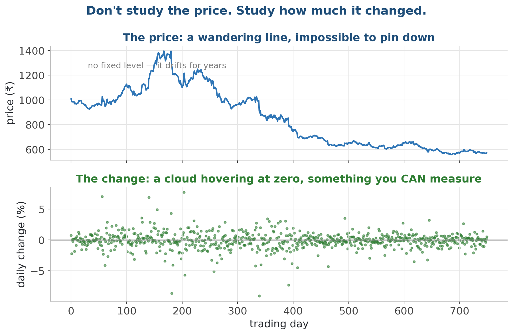
A price wanders with no fixed level; its daily change hovers at zero, and that is what we can actually measure.
Don't study the price. Study how much it changed. That change, written as a percentage, is called the return.
What we'll cover
- 1 The problem and the one idea (done — that was the big picture)
- 2 What a market is, and the four things that trade on it
- 3 Long vs short, and why there is no return without risk
- 4 Prices vs returns — and why quants prefer log-returns
- 5 Getting real Indian market data into Python
- 6 What real returns look like, and the language of time series
- 7 Lab: pull the Nifty, compute returns, run the diagnostics
1 · What a market is, and what trades on it
A market in one sentence
- A financial market is just a place where buyers and sellers agree on a price for something.
- In India the big stock exchanges are the NSE and the BSE, both in Mumbai.
- A buyer posts the price they will pay (a 'bid'); a seller posts the price they will accept (an 'ask').
- When a bid meets an ask, a trade happens, and that becomes the latest price on your screen.
Buyers, sellers, and the price between them
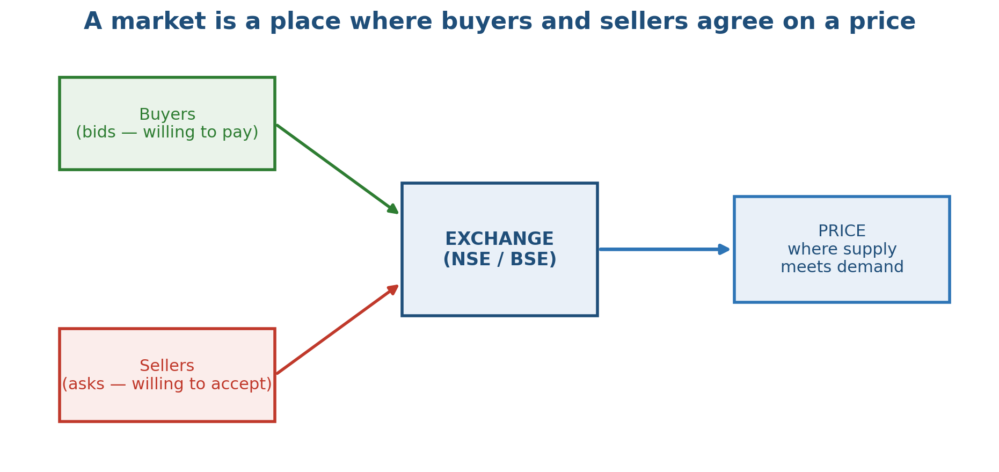
The exchange matches bids and asks; the price is where supply meets demand.
Why do prices move at all?
- New information: company earnings, an RBI rate decision, the monsoon, the budget, global news.
- Supply and demand shift as people change their minds about what something is worth.
- Some moves are just noise: many small trades with no single cause.
- Because the future is uncertain, tomorrow's price is genuinely random.
- That randomness is exactly why finance reaches for probability — the same probability you may have met in stats.
The four building blocks (learn these cold)
The four building blocks, at a glance
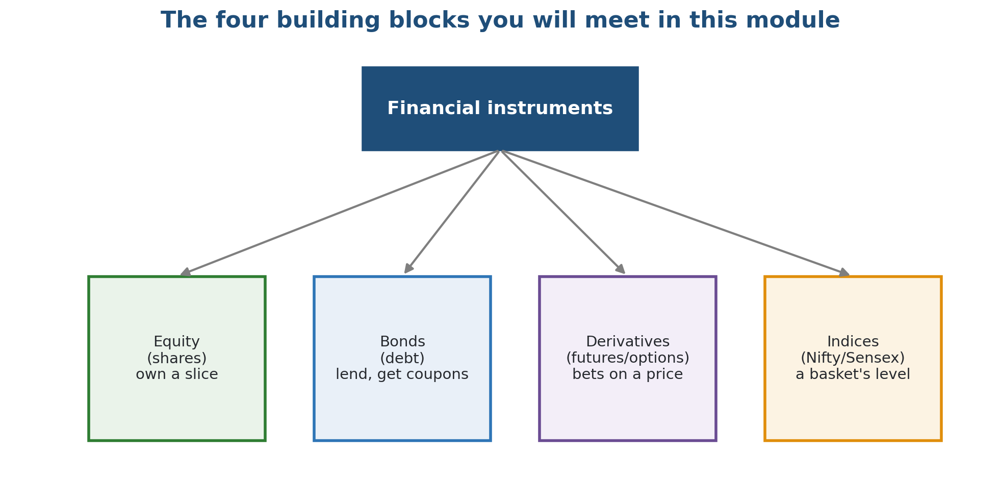
Equity, bonds, derivatives, indices — the vocabulary of the whole finance module.
Indices: the market's thermometer
- An index tracks the combined level of a basket of stocks with one number.
- Nifty 50: the 50 largest, most-traded companies on the NSE.
- Sensex: 30 large companies on the BSE, India's oldest index (since 1986).
- You can't buy an index directly, but you can buy a fund or future that tracks it.
- Perfect for learning: diversified, decades of history, and free data — which is why our labs use it.
2 · Positions and the risk-return trade-off
Long vs short: two ways to have a view
- Going LONG = you buy now, hoping the price rises. The default, intuitive trade.
- Going SHORT = you sell first (borrowing the asset), hoping to buy it back cheaper later.
- Long profits when the price goes UP; short profits when it goes DOWN.
- Short selling lets you make money in a falling market, but the risk is larger.
Long and short payoffs
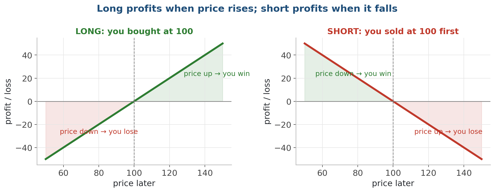
Mirror images: each is a straight line through your entry price.
There is no return without risk. If someone promises high returns with no risk, that is not finance — it is a fraud.
Risk vs return: the central trade-off
- Cash: tiny return, tiny risk.
- Bonds: modest, fairly safe.
- Equity: higher, bumpier.
- Derivatives: high, dangerous.
- The dashed line is the trade-off.
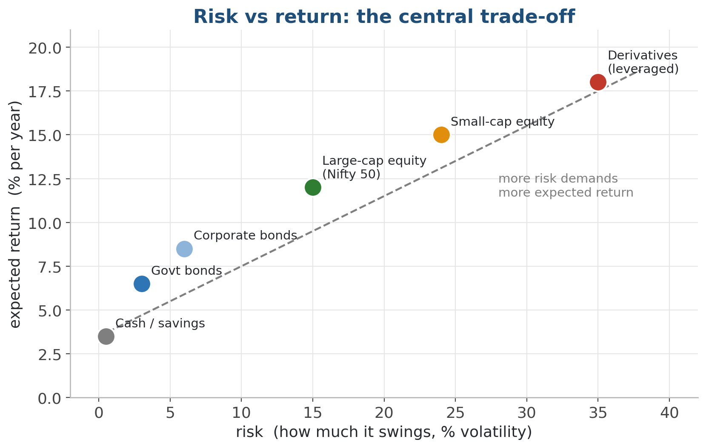
Cash, bonds, equity, derivatives — higher expected return sits up-and-right, with more risk.
Measuring risk and return — plain definitions
- Return: the percentage change in value over a period.
- Expected return: the average return across many possible futures.
- Risk, or volatility: how much returns swing around that average — the size of the moves, ignoring direction.
- If you have met a mean and a standard deviation, that is exactly what these two are, applied to money.
3 · Prices vs returns, and the log-return
Why we model returns, not prices
- Prices have no natural scale: a ₹100 stock and a ₹1,00,000 stock are not comparable.
- A ₹10 move means a lot for a ₹100 stock and nothing for a ₹1,00,000 one.
- Returns (percentage changes) are comparable across stocks and across time.
- And they are far better behaved statistically than prices — which is what lets us model them.
A price series and its return series
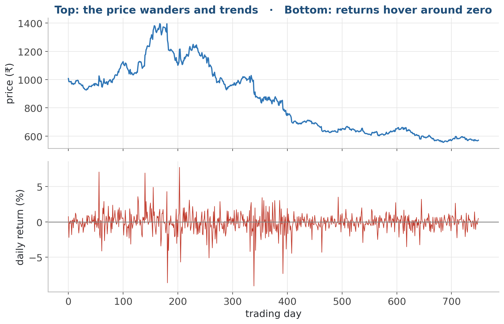
Top: the price trends and wanders. Bottom: the returns hover around zero.
Simple returns: the everyday definition
- Simple return = (price today − price yesterday) / price yesterday.
- Example: ₹100 → ₹110 is a +10% simple return.
- Easy to explain, and what most people mean by 'return'.
- But they don't add up cleanly across days, which causes headaches.
Log-returns: the quant's choice
- Log-return = ln(price today ÷ price yesterday), i.e. ln(1 + simple return).
- For small daily moves it almost equals the simple return.
- They ADD over time: a week's log-return is the sum of its days.
- They are more symmetric: a +x and a −x move are mirror images.
- This is the same ln and exp you may have met in calculus, doing real work.
Simple vs log returns, side by side
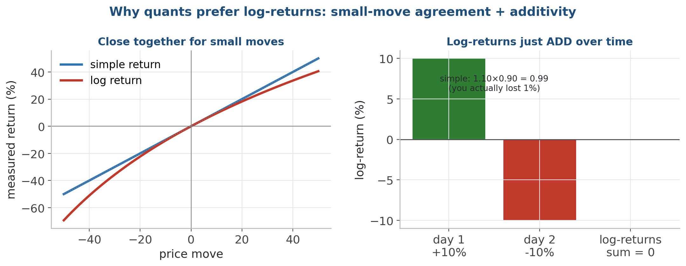
Left: they agree for small moves. Right: log-returns add to zero on a +10% / −10% round trip.
4 · Getting real market data
Two tools to pull Indian (and global) data
- yfinance: a free Python library that downloads Yahoo Finance data worldwide.
- NSEpy: a library aimed specifically at NSE India data.
- Both hand you a tidy pandas DataFrame — exactly the skill from Module 0.
- Our notebooks fall back to a seeded synthetic series if there's no internet, so they always run.
- Concept on the slides; the actual code lives in the GitHub notebooks.
What one row of market data looks like (OHLCV)
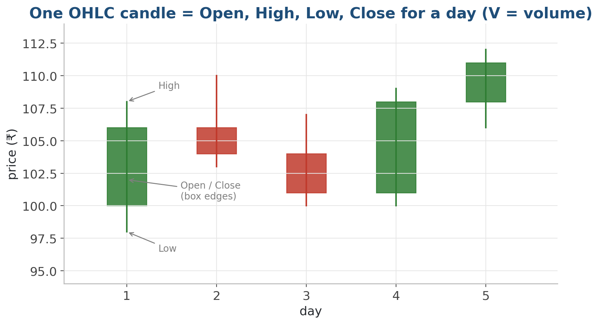
Each day is an OHLC candle: Open, High, Low, Close — plus V for Volume.
OHLCV: the columns you'll get back
5 · What real returns actually look like
The stylised facts of returns
- Across markets and decades, returns share a few robust patterns.
- These 'stylised facts' are what a good model must respect.
- Three big ones today: fat tails, volatility clustering, and the autocorrelation pattern.
- Ignore them and your risk estimates will be dangerously wrong.
Fact 1 — fat tails
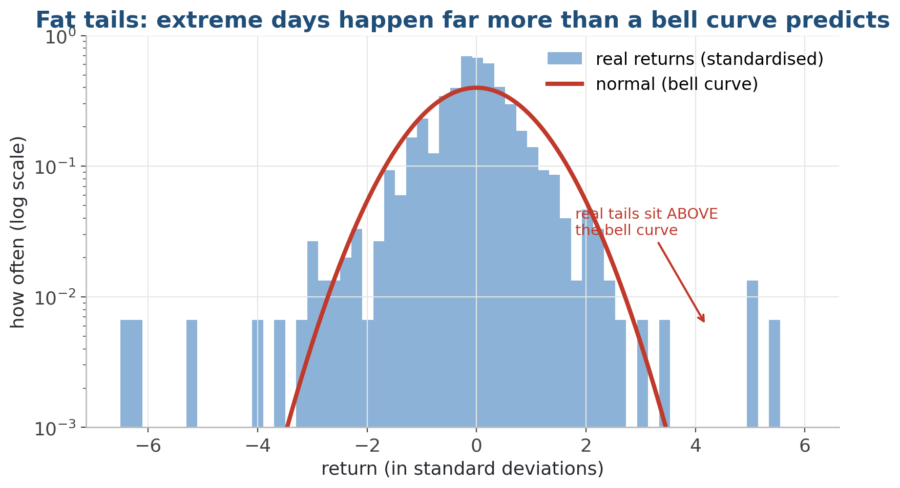
Real returns produce extreme days far more often than a normal bell curve allows.
Fact 2 — volatility clustering
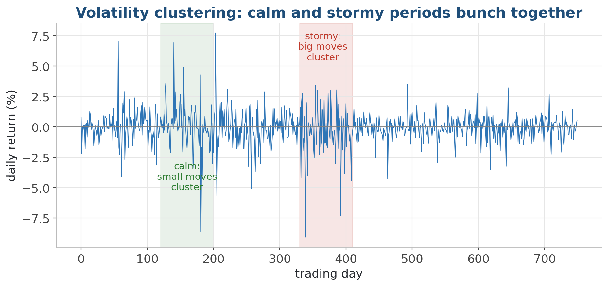
Big moves follow big moves; calm follows calm. Volatility comes in waves.
Fact 3 — the autocorrelation signature
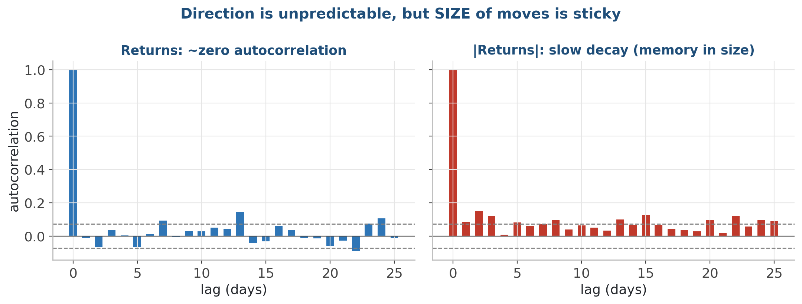
Returns show almost no autocorrelation; the SIZE of returns shows a lot.
6 · The language of time series
A stochastic process, intuitively
- A stochastic process is just a random quantity that changes over time.
- At each step the next value is partly chance: it has a range of possibilities, not a fixed number.
- A stock price is the classic example: many possible futures, one of which actually happens.
- If you have met random variables, this is that idea stretched out along time.
One rule, many possible futures
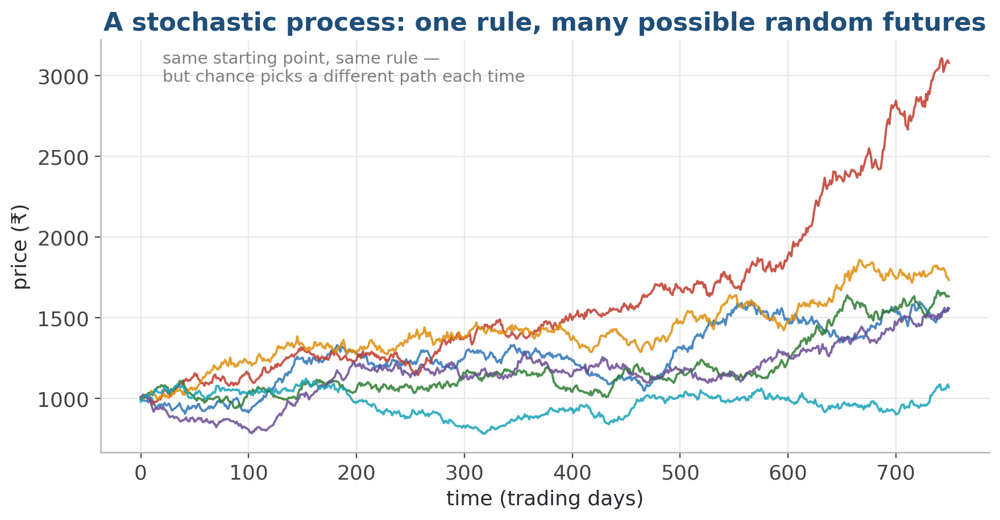
Each line is a different random path the price could have taken from the same start.
Stationarity: why models need it
- A series is (roughly) stationary if its statistics don't drift over time.
- Same average, same spread, same behaviour at the start, middle and end.
- Most time-series models ASSUME this — otherwise the past can't teach the future.
- Prices are not stationary (they trend); returns are roughly stationary.
- So we turn prices into returns to get a series we can actually model.
Stationary vs non-stationary
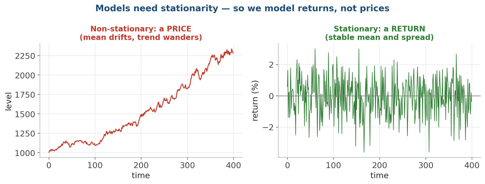
A price drifts (non-stationary). A return sits around a stable mean (stationary).
The ADF test: is it steady enough to model?
- ADF = Augmented Dickey-Fuller, a standard statistical test.
- It checks the idea 'this series is non-stationary'.
- Read it like any hypothesis test: a small p-value (say under 0.05) lets you reject non-stationarity.
- So a small p-value means 'looks stationary, good to model'.
- statsmodels gives it to you in one line; we read the output, not the maths.
Run the ADF test: price fails, returns pass
- The big p-value says the price is non-stationary; the tiny one says its returns are stationary.
CODE from statsmodels.tsa.stattools import adfuller # adfuller(...)[1] is the p-value; small (< 0.05) means stationary. p_price = adfuller(close_price.values)[1] p_returns = adfuller(log_returns.values)[1] print("ADF p-value, PRICE :", round(p_price, 4), "-> < 0.05?", p_price < 0.05) print("ADF p-value, RETURNS:", round(p_returns, 6), "-> < 0.05?", p_returns < 0.05) OUTPUT ▸ ADF p-value, PRICE : 0.7744 -> < 0.05? False ADF p-value, RETURNS: 0.0 -> < 0.05? True
Reading ACF and PACF plots
- Bars beyond the dashed band are 'significant'.
- ACF tailing off, PACF cutting off → an AR pattern.
- They are the fingerprints for picking a model.
- We use them properly in S15 (ARIMA).
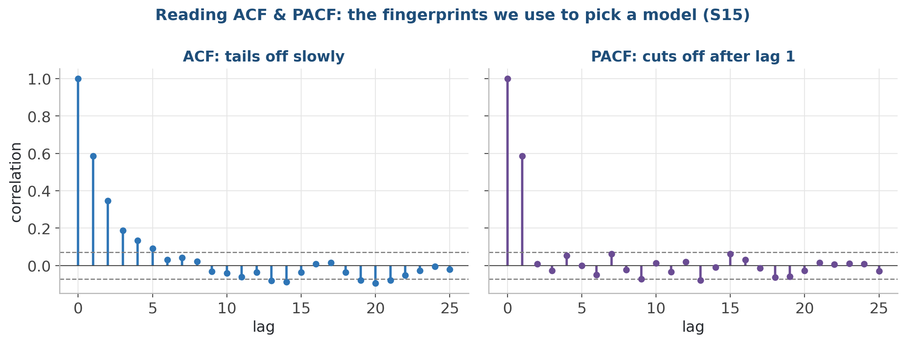
ACF = correlation with the past at each lag; PACF = the same but stripped of the in-between lags.
7 · Pitfalls, lab & wrap-up
Four traps that ruin a finance analysis
- Avoid
- Modelling raw prices (they are non-stationary)
- Assuming returns are normal (ignoring fat tails)
- Studying only firms that survived (survivorship bias)
- Mixing adjusted and unadjusted prices in one series
- Do instead
- Convert to returns; test with ADF first
- Look at the histogram; respect the fat tails
- Include delisted / failed firms in any backtest
- Use adjusted close consistently, end to end
Prices in, returns out — the finance starting point
- Almost every finance session starts here: download prices, convert to returns, annualise mean and vol.
CODE import yfinance as yf px = yf.download("RELIANCE.NS", start="2023-01-01")["Close"] ret = px.pct_change().dropna() # simple daily returns ann_return = ret.mean() * 252 # 252 trading days a year ann_vol = ret.std() * (252 ** 0.5) sharpe = ann_return / ann_vol # return per unit of risk
Lab: pull the Nifty, compute returns, run the diagnostics
- In the lab: download real Indian market data, turn it into returns, and reproduce the famous facts about markets with your own eyes.
- 1. Notebook 01: pull the Nifty 50 plus two NSE stocks via yfinance — with an offline fallback so it always runs.
- 2. Notebook 02: compute simple and log-returns from adjusted close; confirm they nearly match.
- 3. Plot the price vs the return series; plot the fat-tailed histogram against a normal bell curve.
- 4. Show volatility clustering, and the ACF of returns vs the ACF of |returns|.
- 5. Notebook 03: run the ADF test on prices (non-stationary) and on log-returns (stationary), then read the ACF and PACF.
- Deliverable: a notebook on GitHub: Nifty + NSE returns, the stylised-fact plots, and an ADF / ACF / PACF read-out with a short written interpretation.
Key takeaways
- A market is buyers and sellers agreeing a price; equity, bonds, derivatives and indices are the four building blocks.
- Long profits when price rises, short when it falls — and there is no return without risk.
- Don't study the price, study the return; log-returns add over time and tie back to ln / exp.
- Real returns have fat tails and volatility clustering — never assume a clean bell curve.
- A price is a wandering, non-stationary series; ADF, ACF and PACF are how we diagnose it.
Code & further reading
- Code: github.com/bp-course/applied-maths-in-industry › S14_finance_101/
- Notebooks for this session
- Data
- Reading
01_pulling_market_data.ipynb 02_returns_and_stylized_facts.ipynb 03_stationarity_acf_pacf.ipynb Nifty 50 / NSE stocks via yfinance, with a seeded synthetic fallback so the notebooks always run offline New to code? primers/python_in_15_minutes.md Today's key idea in one page: primers/returns_and_log_returns.md Never met a bell curve? primers/what_is_a_distribution.md Hull — Options, Futures & Other Derivatives, ch. 1-3 (markets, skip the maths) NSE India — investor education resources (free, India-specific) Cont (2001), Empirical properties of asset returns (skim the stylised facts) statsmodels documentation: tsa (time-series analysis)
Next session
- S15 — Forecasting with ARIMA & exponential smoothing. We turn today's steady return series into actual forecasts, using the ACF/PACF fingerprints to pick the model.